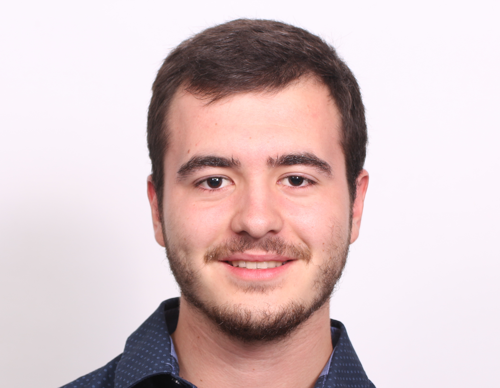

Langues
Allemand: lu, écrit, parlé. Obtention du niveau B1 en 2013 et Programme Brigitte Sauzay en 2013 (3 mois à Francfort)
Anglais: lu, écrit, parlé.
TOEIC: 935/990
Compétences
Maîtrise du pack Office
Diplômé du MOOC gestion de projet
Maîtrise de langages informatiques (Python 3, Java, html, css) notions de SQL
Etienne LEVECQUE
21 ans
Permis B & Véhicule
Elève ingénieur en deuxième année à la recherche d'une stage de 9 semaines du 01/07/19 au 30/08/19
EXPERIENCE
Projet Galidog
Septembre 2017 - Janvier 2019
Projet de 15 étudiants Centraliens organisé par l'école en partenariat avec une entreprise externe pendant 1 an et demi
Endiverie de Soyécourt (80)
Janvier - Février 2018
Stage ouvrier: travail sur la chaîne de conditionnement des endives
FORMATION
Diplôme d'ingénieur généraliste (en cours)
2017 -
Ecole Centrale de Lille
Class préparatoire MPSI/MP option SI
2015 - 2017
Lycée Pierre d'Ailly, Compiègne (60)
Baccalauréat Binational Abi-Bac Mention Très Bien
2012 - 2015
Lycée Robert de Luzarches, Amiens (80)
EXPERIENCES ASSOCIATIVES ET SPORTIVES
Président du foyer de l'Ecole Centrale Lille
Mars 2018 - Mars 2019
Président d'une association étudiante à but non lucrative d'un CA de 70k€. Poste mettant en avant des valeurs telles que le leadership et la responsabilité
Défis personnel encadré par l'Ecole Centrale Lille
2018 - 2019
Créer une IA (python3) jouant à Avalam un jeu de plateau abstrait alliant la combinatoire et la stratégie
Sport
Pratique régulière du rugby au niveau universitaire, de badminton, de course à pieds et de raids